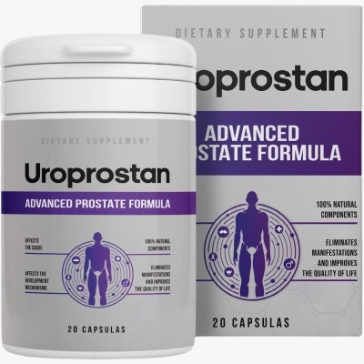
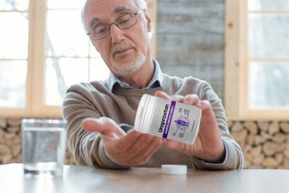

Suporte Natural para o Bem-Estar Masculino e Função Prostática
Uroprostan é o suplemento alimentar (Fórmula Avançada) estudado com componentes 100% naturais para favorecer a qualidade de vida dos homens.
Desconto de 50% aplicado!
78,00 EUR
39,00 EUR
Garanta Agora o Seu Desconto
78,00 EUR
39,00 EUR

92% dos homens enfrentam desconfortos ligados à idade. Reconhece algum?
.jpeg)
Não ignore os sinais do seu corpo. Se notou pelo menos 1 ou 2 destes sintomas, é o momento de apoiar o seu organismo:
- Sente ligeiros desconfortos ou tensões na zona inguinal.
- Sente formigueiro ou pressão no períneo.
- Notou que vai à casa de banho com muito mais frequência, especialmente à noite.
- A ereção tornou-se mais fraca ou inconstante.
- Sente uma diminuição fisiológica da libido.
- Tem dificuldades iniciais durante a micção ou sensação de esvaziamento incompleto.
Negligenciar o bem-estar íntimo pode afetar gravemente a sua qualidade de vida e a serenidade na sua relação!
Uroprostan: Uma Ajuda Segura para o Seu Equilíbrio
- Ação Calmante: Ajuda a reduzir as sensações de tensão e desconforto local.
- Melhora a Micção: Favorece um fluxo normal e reduz as idas noturnas à casa de banho.
- Apoia as Funções Masculinas: Contribui para manter uma circulação sanguínea saudável, útil para a função erétil.
- Restaura o Desejo: Um corpo em equilíbrio favorece o regresso de uma libido normal.
- 100% Natural: Ingredientes selecionados para a máxima tolerância.

Como Tomar Uroprostan?
💊
1 Cápsula
A tomar 3 vezes ao dia
🍽️
Antes das Refeições
Para maximizar a absorção
📅
Tratamento Contínuo
Recomendado para resultados duradouros
Entrega e Pagamento: Fácil e Seguro
- 📝 Formulário de encomenda: Insira os seus dados no formulário no site oficial.
- 📞 Chamada: Um dos nossos especialistas irá contactá-lo para confirmar os detalhes.
- 📦 Envio: Envio do produto em embalagem anónima para a sua privacidade.
- 💶 Receção: Pagamento cómodo e seguro no momento da entrega (de 3 a 10 dias). Nenhum pagamento antecipado exigido!
Preço Especial Hoje:
Apenas 39 EUREm vez de 78 EUR